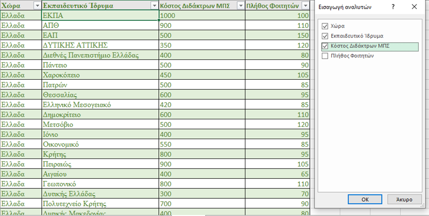
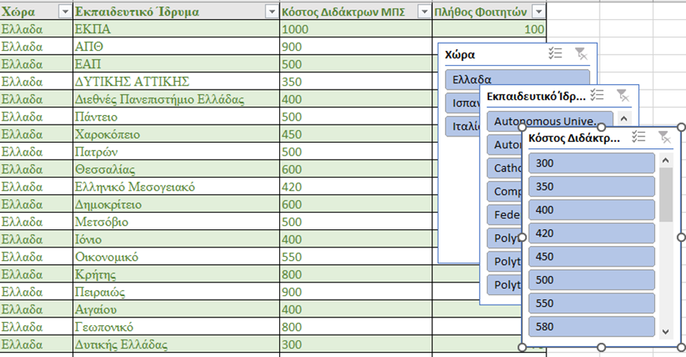
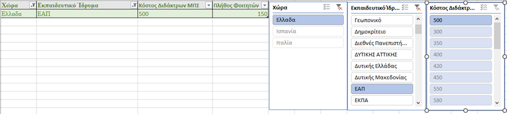

Slicer
Η επιλογή slicer ή αλλιώς «Αναλυτής» είναι μια ακόμα μορφή φίλτρου, προσφέρεται σε πίνακες ή συγκεντρωτικούς πίνακες, αλλά και συγκεντρωτικά γραφήματα, μέσω της καρτέλας «Εισαγωγή» και μας δίνει τη δυνατότητα να επιλέξουμε μικρότερα κομμάτια (τεμάχια) του πίνακα με γρηγορότερο φλιτράρισμα.
Στο παράδειγμα που φαίνεται παρακάτω μπορούμε με τη χρήση slicer να φιλτράρουμε άμεσα αν επιλέξουμε «Χώρα», «Εκπαιδευτικό Ίδρυμα» και «Κόστος Διδάκτρων ΜΠΣ» να βρούμε το ιδανικό για τις ανάγκες μας Εκπαιδευτικό Ίδρυμα.

Στη συνέχεια τα δεδομένα θα ‘’τεμαχιστούν’’ κι θα εμφανιστούν σε διαφορετικούς μικρότερους πίνακες οι οποίοι θα αποτελέσουν τον οδηγό για την όποια αναζήτηση επιθυμούμε, όπως φαίνεται παρακάτω.

Όπως βλέπουμε μπορούμε γρήγορα να επιλέξουμε τη Χώρα και το Εκπαιδευτικό ίδρυμα που επιθυμούμε καθώς και το ανάλογο κόστος που μπορούμε να διαθέσουμε για να καταλήξουμε στην επιλογή μας.
